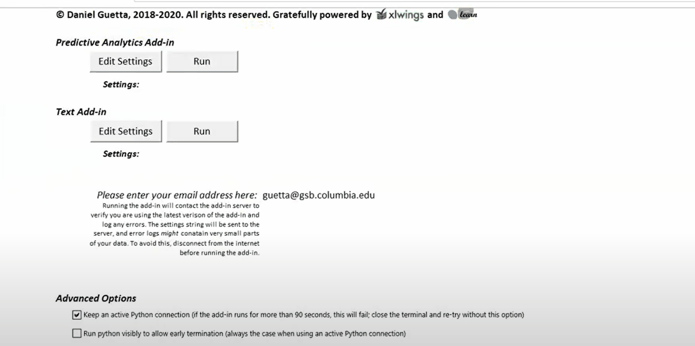

Text Analytics
XLKitLearn supports supervised and unsupervised text analytics. Identify the frequency of words and their relative importance using bag of words, TF-IDF scores, bi-grams and stem words.
Selecting data
Save the data in the same folder as XLKitLearn, and enter the data file name including the file type to select the data.
.csvand.txtare accepted file types

Feature Extraction
Exclude too common and too frequent words by setting a min and max frequency (as a decimal). Set the Max features to include in the output with the slider.
Feature Limit
The 1,000 feature limit is due to the max number of excel columns and does not impact the analysis.
- Remove English words without much meaning with
Remove English stop words - Calculate
TF-IDFscores to determine the relative frequency and importance of words - Account for word order by including all word pairs with
Bi-grams - Stem words to their common root
The Porter Stemming Algorithms is used for stemming and can take a long time to run.
Output
Select the proportion of data to reserve for evaluation and indicate if the data should be exported in a sparse format or specify the number of topics and max iterations to run a unsupervised a Latent Dirichlet Allocation.
Making predictions
The outputs of the text analytics can be used as inputs for Predictive analytics. Run predictive analytics as normally using the text analytics output as the predictive analytics input.
Using Predictive Analytics
It is critical to use the same proportion of evaluation data and randomization seed between the text analytics and the predictive analytics section so the test and evaluation data are aligned.